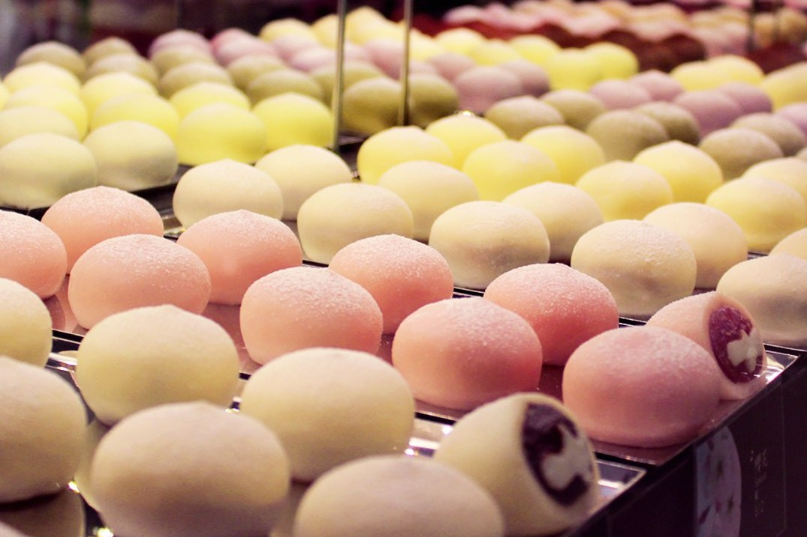
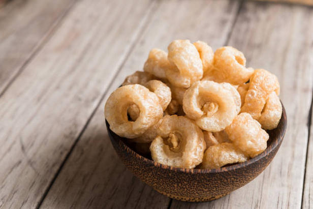
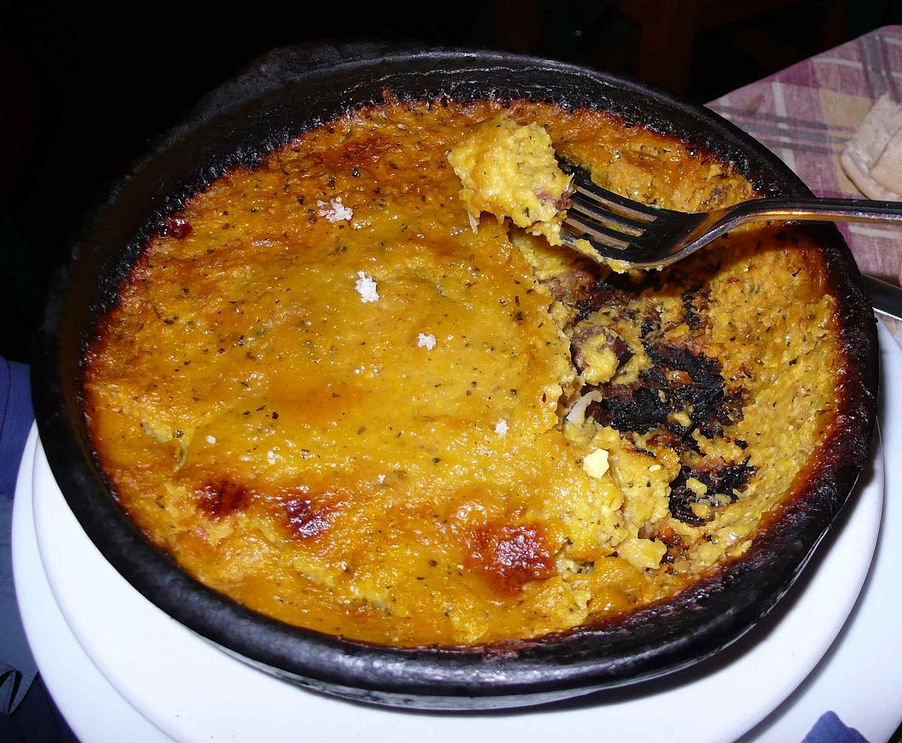
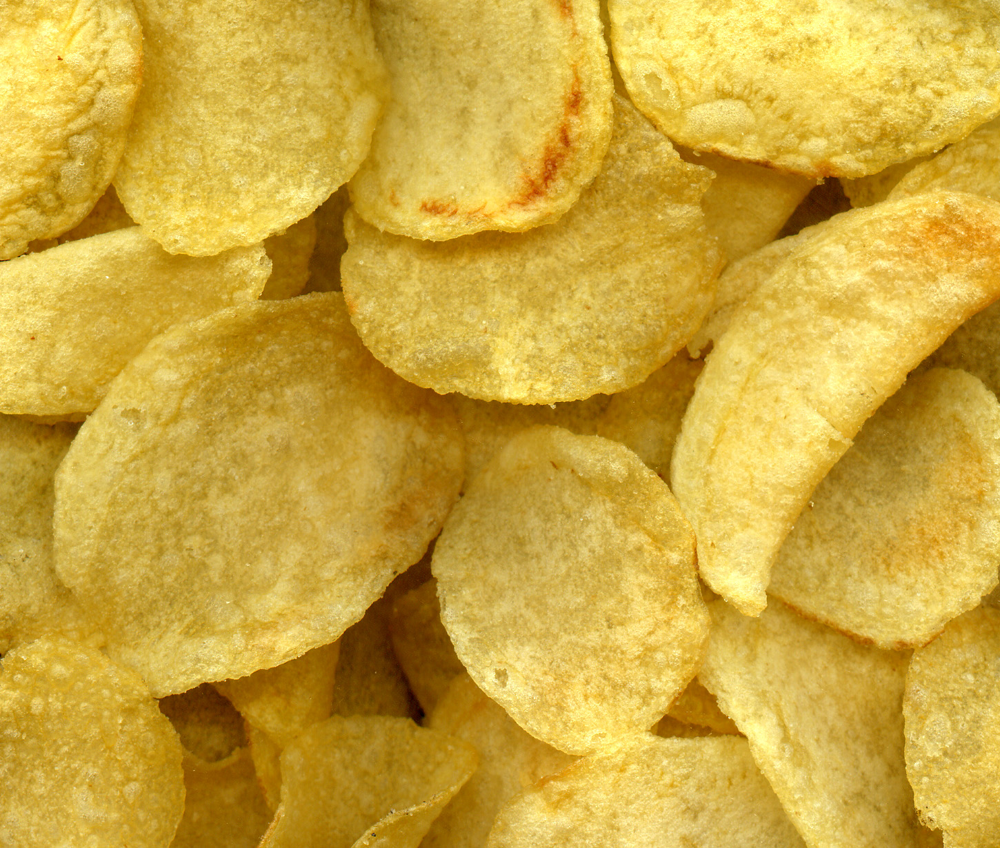
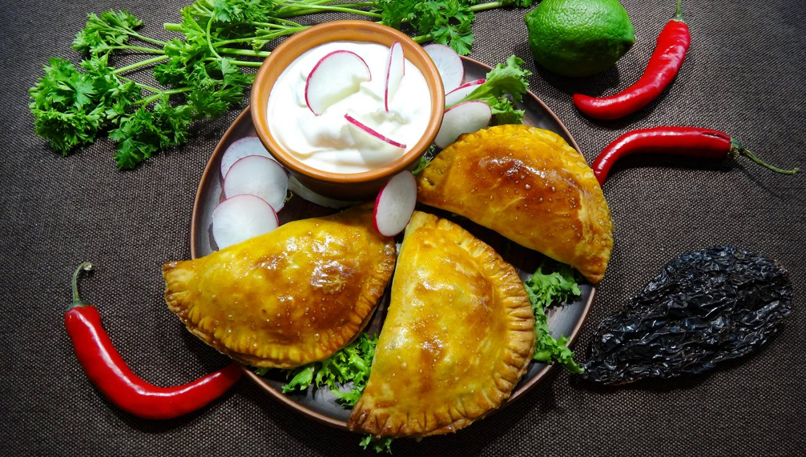
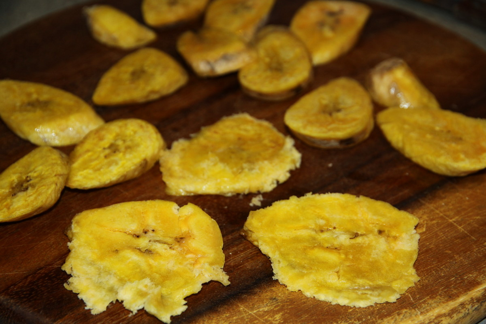
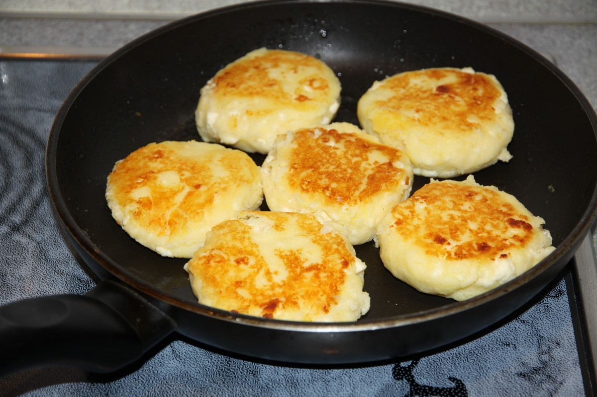
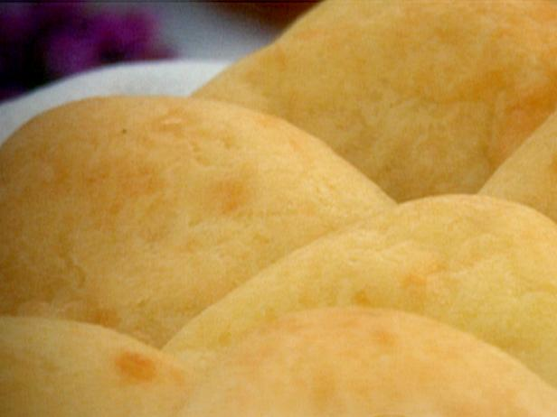

____
Традиционная еда
Моте (Mote) — особый вид местной кукурузы. Белого цвета и нейтрального вкуса. Обычно её варят и подают на закуску. Это и есть те самые загадочные белые хлопья на вашей тарелке.

Чичаррон (Chicharrón). — мелкие кусочки мяса, соленые и сильно жареные. Их подают перед основным блюдом, часто перемешивая с моте. Жареное мясо — лучшая закуска, как считают эквадорцы.

Чокло (Choclo). — сушеная и жареная кукуруза. То, что поначалу можно было принять за орехи или желуди.

Чифлес (Chifles). — чипсы из жареных зеленых бананов.

Эмпанадас (Empanadas). — жареные или печеные пирожки из тонкого теста, по форме похожие на вареники. Вариантов начинки много: мясо, бобы, сыр, овощи, фрукты.

Патаконес (Patacones). — лепешки из жареных спелых бананов.

Япингачос (Llapingachos). — картофельные оладьи.

Хлеб из юкки (Pan de yuca). — лепешки из корнеплода, растущего в джунглях. Экскурсии в индейские племена часто включают аттракцион — изготовление лепешек под руководствам местных. Я, например, сама выкорчевывала юкку, натирала её на большой терке, лепила тесто и жарила на костре. На вкус хлеб довольно пресный, зато приготовлено с душой.

____